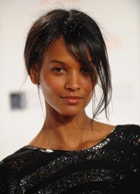
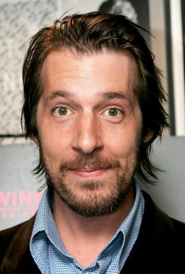

#9001 Wüstenblume
Alternativ: Desert Flower


 IMDB-Wertung: 7.4 / 10
IMDB-Wertung: 7.4 / 10  Metascore: 0
Metascore: 0 
The autobiography of a Somalian nomad circumcised at 3, sold in marriage at 13, fled from Africa a while later to become finally an American supermodel and is now at the age of 38, the UN spokeswoman against female genital mutilation (FGM).
Jahr: 2009
Dauer: 127 Minuten
FSK: 12
Land: England Studio: Majestic FilmverleihTonspuren: DTS - ,
Untertitel: Deutsch,
Auflösung: 1080p (1920x1040) Größe: 12492 MB
Genre: Drama, Biographie
Regisseur: Sherry Hormann
Drehbuch: Smita Bhide
Soundtrack: Martin Todsharow
Darsteller:
-  Liya Kebede als Waris Dirie
 Sally Hawkins als Marilyn
Sally Hawkins als Marilyn Meera Syal als Pushpa Patel
Meera Syal als Pushpa Patel-  Craig Parkinson als Neil
- Matthew Alexander Kaufman als Fastfood Manager
 Timothy Spall als Terry Donaldson
Timothy Spall als Terry Donaldson Anthony Mackie als Harold Jackson
Anthony Mackie als Harold Jackson Tim Seyfi als Simon
Tim Seyfi als Simon- William de Coverly als Doctor
 Juliet Stevenson als Lucinda
Juliet Stevenson als Lucinda- Nigel Betts als Home Office Detective
 Anastasia Hille als Journalist
Anastasia Hille als Journalist- Nick Raio als Truck Driver New York
 Elli als European Man (uncredited)
Elli als European Man (uncredited)- Soraya Omar-Scego als Young Waris
- Idriss Abdillahi Houfaneh als Old Man
- Awa Saïd Darar als Amina
- Roun Daher Aïnan als Waris' Mother
- Osman Aden Dalieg als Waris' Father
- Anna Hilgedieck als Girl in Shower
 Lucrezia Phantazia als Girl in Boardinghouse
Lucrezia Phantazia als Girl in Boardinghouse- Prashant Prabhakar als Kami
- Teresa Churcher als Nurse Anne
- Mahamed Mohamoud Egueh als Amal
- Daher Obsieh Aouled als Mister Galool
- Mohamed Abdi Dahler als Truck Driver
- Mardilla Saíd Djama als Waris' Grandmother
- Fardouza Moussa Egueh als Aunt Aisha
- Eckart Friz als Spike
- Michele Thevenet als Make Up Artist
- Matthias Ransberger als Casting Assistant
- Eric Carter als Photographer
- Kaltoun Hassan als Aunt Marium
- Addo Sabrie als Ambassador
- Emma Kay als Immigration Officer
- Melanie Roberson als Room Mate
- Safa Idriss Nour als Little Waris
- Dahabo Ali Kidar als Midgaan
- Robert Robalino als Cafe Owner
- James Allan als Model Agent's Assistant
- Gavin Blackburn als Photographer's Assistant
- Grace Meurisse Francis als Chav (uncredited)
- Chris Wilson als Embassy Official (uncredited)
- Andrew Yiallouros als Supporting Artist (uncredited)
Datei: X:\2009(N-Z)\Wüstenblume (2009, FSK12, 1920x1040).mkv seit 17.05.2018
Festplatte: HD 2009(G-Z)-2010(A-F)
 Es gibt insgesamt 99 Filme in der Gruppe '2009(N-Z)'
Es gibt insgesamt 99 Filme in der Gruppe '2009(N-Z)'